软件工程
软件工程
UML
统一建模语言(Unified Modeling Language，UML)是一种为面向对象系统的产品进行说明、可视化和编制文档的一种标准语言，是非专利的第三代建模和规约语言。UML是面向对象设计的建模工具，独立于任何具体程序设计语言。
类图
类图是以反映类的结构(属性,操作)以及类之间的关系为主要目的,描述了软件系统的结构,是一种静态建模方法
如屠所示表示一个用户类User, 属性有 uid ,name, age ,birthday
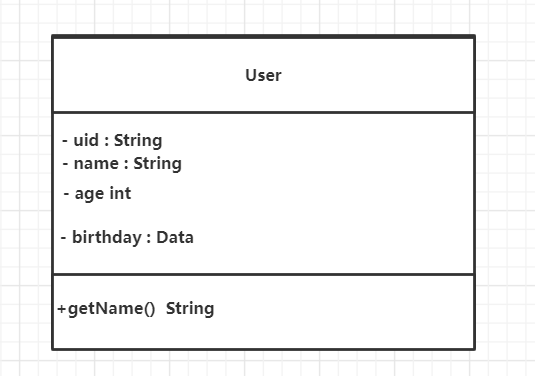
类的内容:
第一层：类的名称，如果是抽象类，则就用斜体显示。
第二层：字段和属性。
第三层：方法。
前面的符号表示访问修饰符：
- “+” 表示public
- “-“ 表示private
- “#”表示protected
- “~”表示只对同一个包内的其他类可见,
类之间的关系:
继承(泛化)关系： 三角形 + 实线
鸟也有生命这种属性，也有新陈代谢和繁殖的行为。
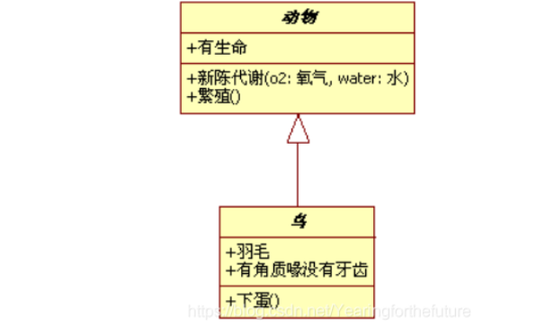
==代码实现: 即Java中父类子类之间的继承关系,关键字extend==
实现关系：三角形 + 虚线
大雁可以各种各样的飞翔方式。
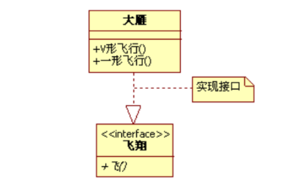
==代码实现: 即 Java中的接口与实现类 ,关键字 implements==
关联关系： 实线箭头
企鹅需要知道气候的变化，需要了解气候规律
关联关系:==强调的是被引用关联的其它类型实例要作为本类的字段属性==(静态或非静态)
具体代码实现: 一个类中的用其他类作为自己的类的成员变量
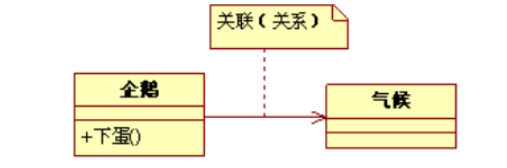
依赖关系： 虚线箭头
动物需要依赖氧气和水进行生存。
依赖关系只是在==本类方法内部使用到某类而已，严格来说不是这个类的一部分==。
具体代码实现: 一个类中需要调用其他类的方法(服务)从而需要用到其他类的对象(注意:并不是作为的成员变量)**
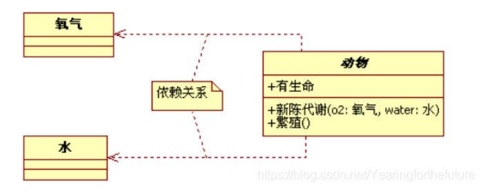
==值得一提的是: 组合关系 和 聚合关系 是 关联 的两种表现形式==
组合关系： 实心的菱形 + 实线箭头
心脏是人==不可或缺的一部分==。
代码实现: 在构造器中自己new 对象
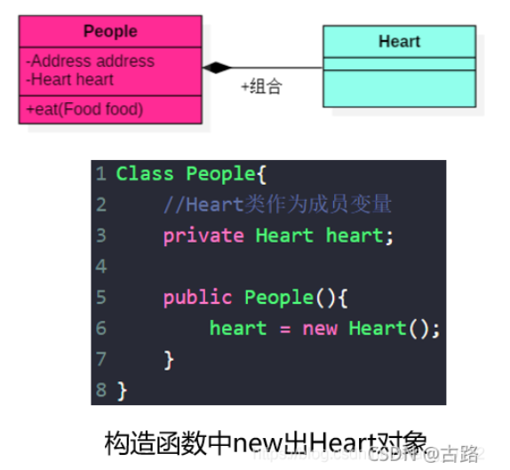
聚合关系（包含关系）： 空心的菱形 + 实线箭头
人在人群这个集合里面,但人群里==多一个人少一个人无所谓,并不是不可或缺的==。
代码实现: 在构造器中通过形数传入一个对象
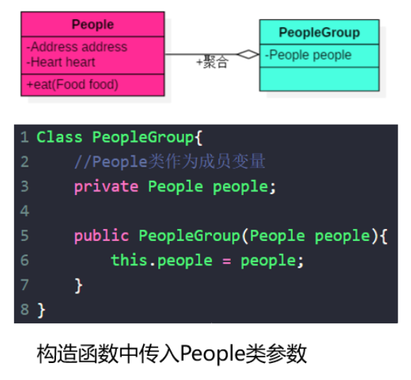
对象图
对象是类的实例，是一个封装了状态和行为的实体。对象通过其类型、名称和状态区别于其他对象而存在。
对象名：在矩形框的顶端显示。
类型：具体的类目
状态：由对象的所有属性以及运行时的当前值组成。
表示法：在对象名后跟一个冒号加上类型名，并且使用下划线与类进行区分。
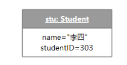
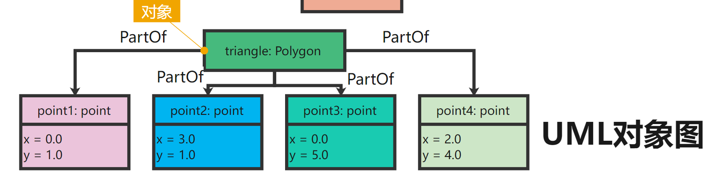
对象图与类图的区别:
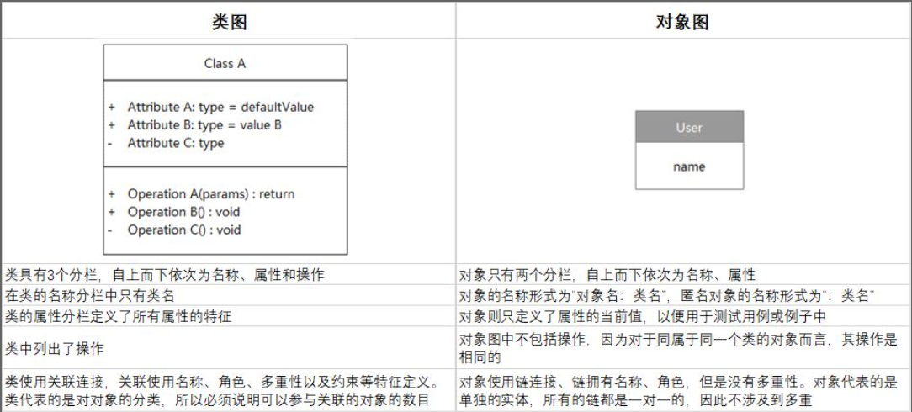
用例图 [期末考]
用例图是被称为参与者的外部用户所能观察到的系统功能的模型图,用例图列出系统中的用例和系统外的参与者,并显示哪个参与者参与了哪个用例执行
组成部分:
- 参与者
参与者（Actor）是指存在于系统外部并直接与系统进行交互的人、系统、子系统或类的外部实体的抽象。
每个参与者可以参与一个或多个用例，每个用例也可以有一个或多个参与者。
在用例图中使用一个人形图标来表示参与者，参与者的名字写在人形图标下面。
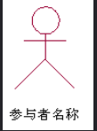
- 参与者间的的关系
由于参与者实质上也是类，所以它拥有与类相同的关系描述，即参与者与参与者之间主要是泛化关系（或称为“继承”关系）。
泛化关系的含义是把某些参与者的共同行为提取出来表示成通用行为，并描述成超类。泛化关系表示的是参与者之间的一般/特殊关系，在UML图中，使用带空心三角箭头的实线表示泛化关系。
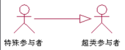
- 系统边界
在项目开发过程中，边界是一个非常重要的概念。这里说的系统边界是指系统与系统之间的界限。通常我们所说的系统可以认为是由一系列的相互作用的元素形成的具有特定功能的有机整体。
系统同时又是相对的，一个系统本身又可以是另一个更大系统的组成部分，因此，系统与系统之间需要使用系统边界进行区分开来。我们把系统边界以外的同系统相关联的其他部分，称之为系统环境。
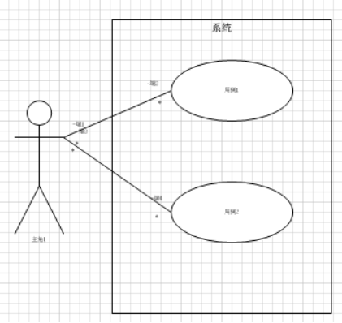
表示形式:
关联关系:
关系说明：表示参与者与用例之间的关系
表示方法：带箭头的实线，箭头指向用例。
举例说明：用户登录系统
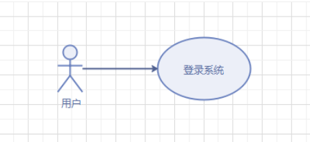
归纳（泛化）关系
关系说明：表示参与者与参与者之间、用例与用例之间的关系。**==类似Java中的继承==,一个用例可以被特别列举为一个或多个子用例，这被称为用例泛化。**
表示方法：带空心箭头的实线，箭头指向被泛化（被继承）的用例，即基础用例/父用例。（注意：泛化关系的箭头不是指向被泛化，而是指向被继承。泛化和继承是不同的方向。泛化是从下到上的抽象过程，继承是从上到下，从一般到特殊的过程。）
举例说明：VIP会员和普通用户，归纳为用户；账号登录与微信登录，也可归纳为登录系统。
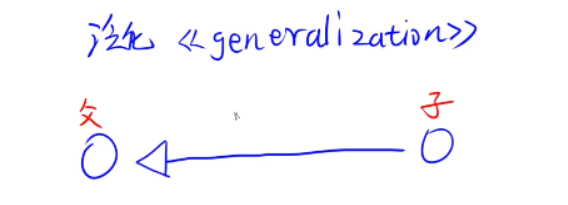
包含关系
关系说明：表示用例与用例之间的关系，其中**==执行基础用例前必须执行被包含用例==,一个用例（基础用例）的行为包含了另一个用例（包含用例）的行为。**
表示方法：虚线箭头+<include>字样，==箭头指向被包含的用例==
举例说明：用户在账号登录过程中，包括输入账号、输入密码、确认登录等操作
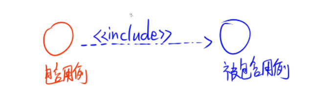
拓展关系
关系说明：表示用例与用例之间的关系；用于拓展用例对基础用例的增强；**==拓展用例是在特定条件出现时(不是必须执行的)，才会被执行的用例(不同于之包含关系的必须执行)==。**
表示方法：虚线箭头+<extend>字样，==箭头指向被扩展的用例（即基础用例）==
举例说明：用户在登录过程中忘记了密码
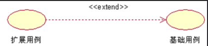
时序图
参考自:UML序列图总结_西安楚凡科技有限公司 - 企业级UML2.x建模工具 | 应用生命周期管理工具 | 需求管理工具| 中国最专业的UML解决方案提供商 (trufun.net)
序图更多只是一种叫法，平常我们所说的顺序图、序列图也是在称呼它。时序图是基于交互的对象行为建模，是 UML 用于描述对象之间信息的交互过程的方法，是描述对象间协作关系的模型。
时序图用于捕获系统运行中对象之间有时间顺序的交互，是由生命线和消息组成。
时序图将交互关系表示为一个二维图。纵向是时间轴，时间沿竖线向下延伸。横向轴代表了在协作中各独立对象的类元角色。类元角色用生命线表示。当对象存在时，角色用一条虚线表示，当对象的过程处于激活状态时，生命线是一个双道线。消息用从一个对象的生命线到另一个对象生命线的箭头表示。箭头以时间顺序在图中从上到下排列。
序列图中涉及的元素：
生命线:
生命线名称可带下划线。当使用下划线时，意味着序列图中的生命线代表一个类的特定实例。
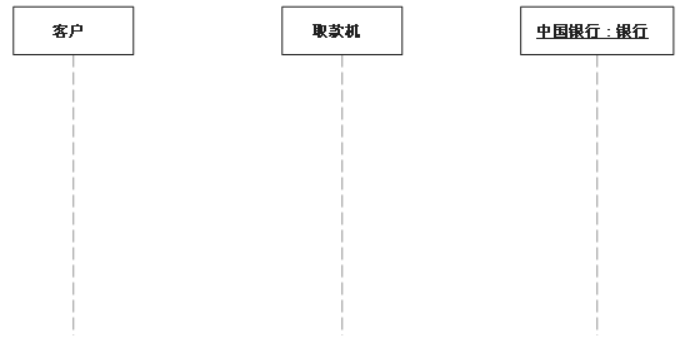
同步消息:
发送人在它继续之前，将等待同步消息响应。
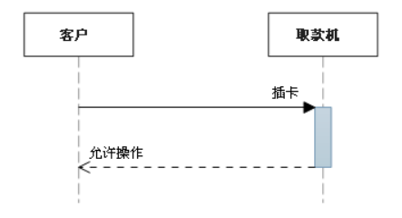
异步消息:
在发送方继续之前，无需等待响应的消息。
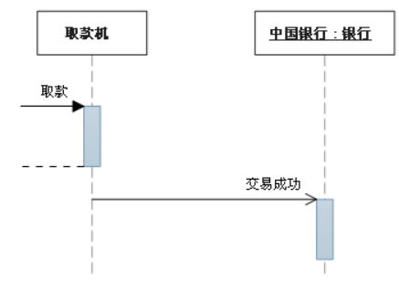
注释:
折页角的内容就是注释内容
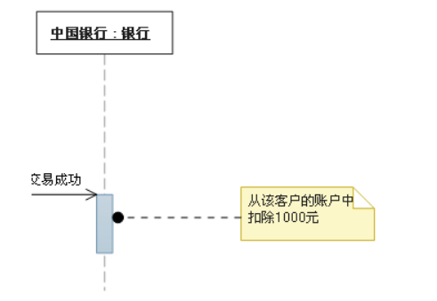
约束:
约束的符号很简单；格式是: [Boolean Test]
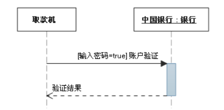
组合片段:组合片段用来解决交互执行的条件及方式。它允许在序列图中直接表示逻辑组件，用于通过指定条件或子进程的应用区域，为任何生命线的任何部分定义特殊条件和子进程。
常用的组合片段有：
抉择（Alt）:
抉择用来指明在两个或更多的消息序列之间的互斥的选择，相当于经典的if..else..。
抉择在任何场合下只发生一个序列。 可以在每个片段中设置一个临界来指示该片段可以运行的条件。else 的临界指示其他任何临界都不为 True 时应运行的片段。如果所有临界都为 False 并且没有 else，则不执行任何片段。
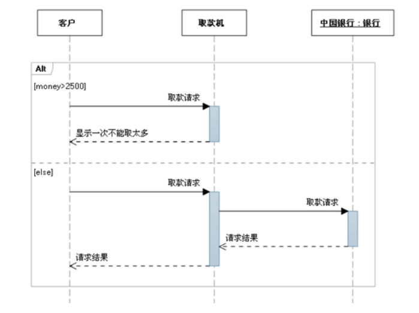
选项（Opt）:
包含一个可能发生或不发生的序列
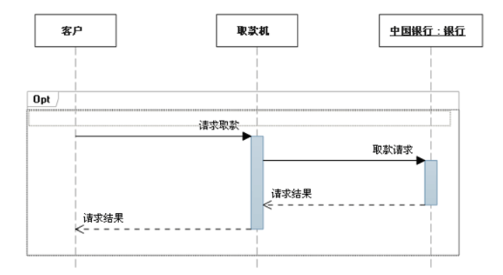
循环（Loop）:
片段重复一定次数。 可以在临界中指示片段重复的条件。
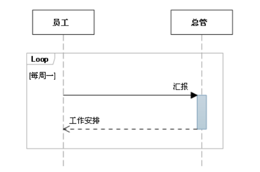
并行（Par）:
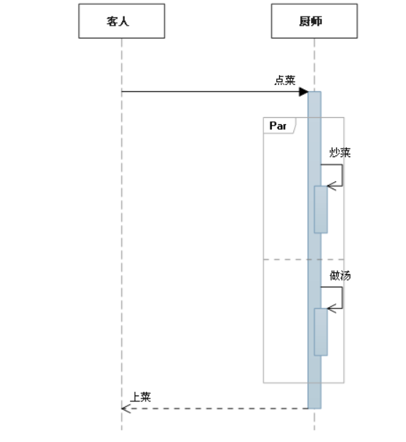
其他常用的图
数据流图(DFD) [期末考]
数据流图，简称DFD，是SA方法(结构化分析方法)中用于表示系统逻辑模型的一种工具，它以图形的方式描绘数据在系统中流动和处理的过程，由于它只反映系统必须完成的逻辑功能，所以它是一种功能模型。
下图是一个飞机机票预订系统的数据流图，它反映的功能是：旅行社把预订机票的旅客信息 (姓名、年龄、单位、身份证号码、旅行时间、目的地等)输入机票预订系统。系统为旅客安排航班，打印出取票通知单(附有应交的账款)。旅客在飞机起飞的前一天凭取票通知单交款取票，系统检验无误，输出机票给旅客。
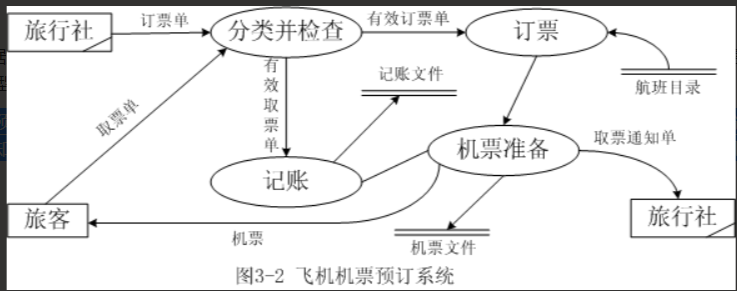
基本图形符号
数据流图有四种基本图形符号：
箭头: 表示数据流；
〇：圆或椭圆，表示加工；
= ：双杠，表示数据存储；
□：方框，表示数据的源点或终点。
(1) 数据流。数据流是数据在系统内传播的路径，因此由一组成分固定的数据组成。如订票单由旅客姓名、年龄、单位、身份证号、日期、目的地等数据项组成。由于数据流是流动中的数据，所以必须有流向，除了与数据存储之间的数据流不用命名外，数据流应该用名词或名词短语命名。
(2)加工(又称为数据处理)。对数据流进行某些操作或变换。每个加工也要有名字，通常是动词短语，简明地描述完成什么加工。在分层的数据流图中，加工还应编号。
(3)数据存储(又称为文件)，指暂时保存的数据，它可以是数据库文件或任何形式的数据组织。
(4)数据源点或终点，是本软件系统外部环境中的实体(包括人员、组织或其他软件系统)，统称外部实体。一般只出现在数据流图的顶层图。
注意事项:
①命名。不论数据流、数据存储还是加工，合适的命名使人们易于理解其含义。
②画数据流而不是控制流。数据流反映系统“做什么”，不反映“如何做”，因此箭头上的数据流名称只能是名词或名词短语，整个图中不反映加工的执行顺序。
③一般不画物质流。数据流反映能用计算机处理的数据，并不是实物，因此对目标系统的数据流图一般不要画物质流。
④每个加工至少有一个输入数据流和一个输出数据流，反映出此加工数据的来源与加工的结果。
⑤编号。如果一张数据流图中的某个加工分解成另一张数据流图时，则上层图为父图，直接下层图为子图。子图及其所有的加工都应编号。
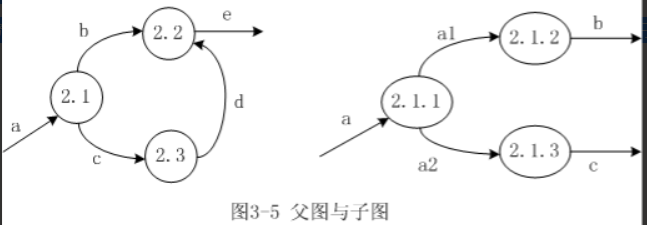
数据字典
数据字典是指对数据的数据项,数据结构,数据流,数据存储,处理逻辑,外部实体等进行定义和描述,其目的是对数据流图中的各个元素作出详细的说明.数据字典的条目有数据流,数据项,数据存储,基本加工(注: 不包括外部实体).
ER图
在数据库设计中很常用
数据词典
数据字典是描述数据的信息集合，是对系统中使用的所有数据元素的定义的集合。通常一般用户是无法修改数据字典的，只有程序维护人员有编辑、修改数据字典的权限
在开发的程序中，数据字典可以帮助开发人员理解各个数据项目的类型、数值和它们与现实世界中的对象的关系
常用字段与示例:
- 字段
- 描述
- 数据类型
- 约束
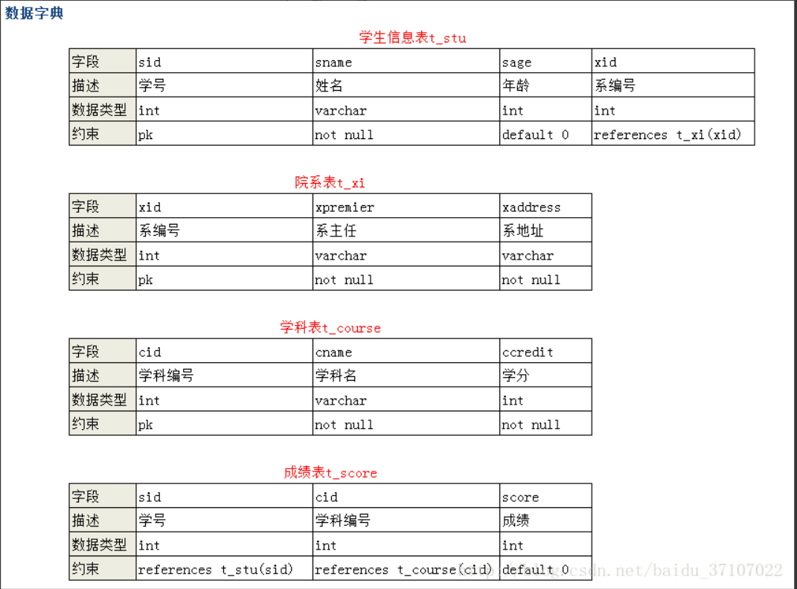
实体关系图(ER图)
E-R图又称实体关系图，是一种提供了实体，属性和联系的方法，用来描述现实世界的概念模型。通俗点讲就是，当我们理解了实际问题的需求之后，需要用一种方法来表示这种需求，概念模型就是用来描述这种需求。
例如:
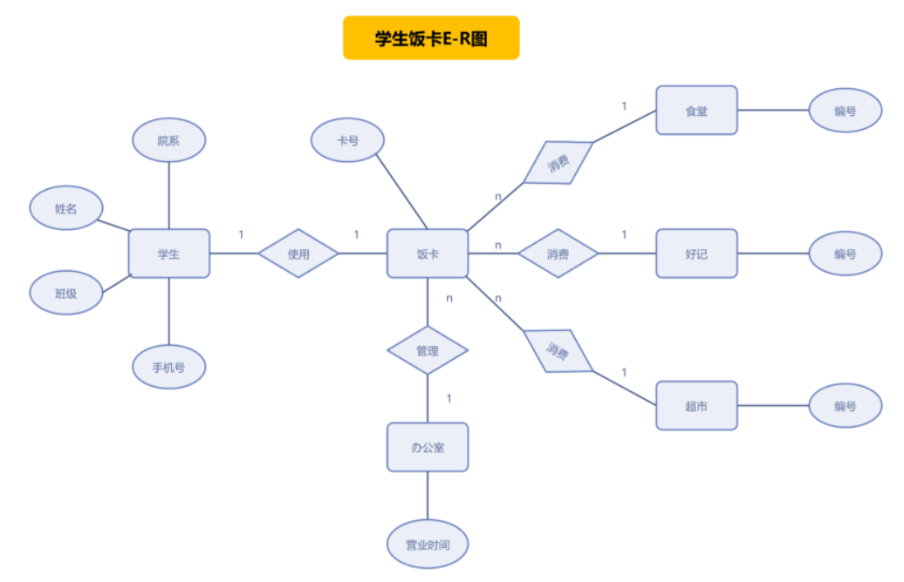
E-R图中的基本元素:
- 实体:实际问题中客观存在的并且可以相互区别的事物称为实体。实体是现实世界中的对象，可以具体到人，事，物。比如：上图中的饭卡、学生、办公室、食堂、超市。
- 属性:实体所具有的某一个特性称为属性，在E-R图中属性用来描述实体。比如上图中的学生，可以用“姓名”、“院系”、“班级”、“手机号”进行属性描述。
- 实体集:具有相同属性的实体的集合称为实体集。例如：全体学生就是一个实体集，（983573，李刚，男，2000/12/12）是学生实体集中的一个实体。
- 实体型:具有相同的特征和性质的实体一定有相同的属性，用实体名及其属性名集合来抽象和刻画同类实体称为实体型，其表示格式为：实体名（属性1，属性2，……）
- 键:在描述实体集的所有属性中，可以唯一标识每个实体的属性称为键。键也是属于实体的属性，作为键的属性取值必须唯一且不能“空置”。比如：不重复的学生号，就可以作为学生的“键”。
- 联系:世界上任何事物都不是孤立存在的，事物内部和事物之间都有联系的，实体之间的联系通常有3种类型：一对一联系，一对多联系，多对多联系。
作图规范:
1）矩形框：表示实体，在框中记入实体名。
2）菱形框：表示联系，在框中记入联系名
3）椭圆形框：表示实体或联系的属性，将属性名记入框中。对于主属性名(主键)，则在其名称下划一下划线。
4）连线：实体与属性之间；实体与联系之间；联系与属性之间用直线相连，并在直线上标注联系的类型。（对于一对一联系，要在两个实体连线方向各写1； 对于一对多联系，要在一的一方写1，多的一方写N；对于多对多关系，则要在两个实体连线方向各写N，M。)
系统流程图
系统流程图用于描绘系统物理模型，表达数据在系统各个部件之间（程序、文件、数据库、表格、人工过程等）流动的情况。
系统流程图是概括的描绘系统物理模型的工具。 它的基本思想是用图形符号以黑盒子形式描绘系统里面的每个具体部件(程序、文件、数据库、表格、人工过程等），表达数据在系统各个部件之间流动的情况。 而不是对数据加工处理的过程，他是物理数据流图而不是程序流程图。
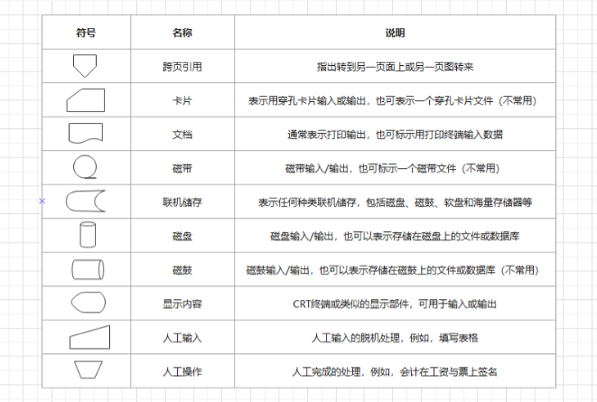
样例:
某生鲜品牌有一个前置仓，存放其业务配送所需的各种生鲜，前置仓的各种生鲜的数量及其库存量临界值等数据记录在前置仓主文件上，当前置仓中生鲜数量发生变化时，应更改库存文件。
若某种生鲜的库存量少于库存临界值，则立即报告采购部门以便订货，规定每天向采购部门送一份采购报告。
用系统流程图的符号进行解释
生鲜的发放和接受称为变更记录，由键盘输入到计算机中。系统中库存清单程序对变更记录进行处理，更新存储在磁盘上的库存清单主文件，并且把必要的订货信息记录写在联机存储上。
最后，每天由报告生成程序读一次联机存储，并且打印出订货报告。
形成系统流程图:
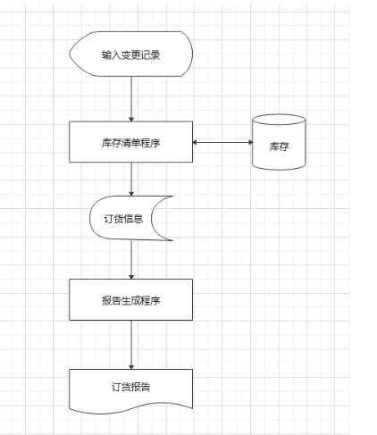
系统结构图(未知)
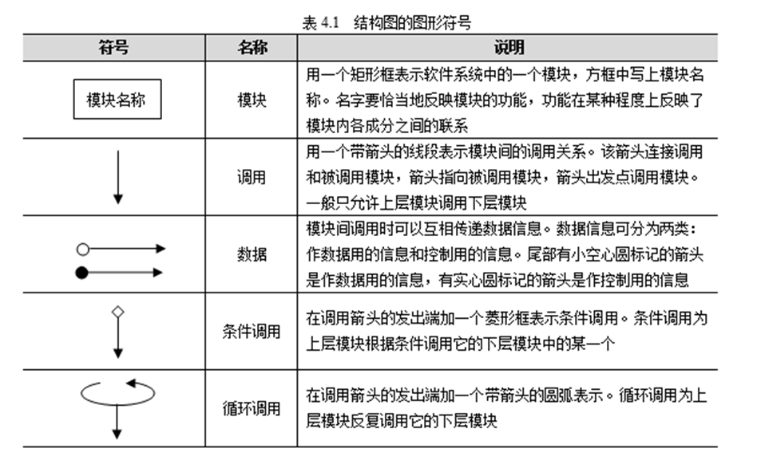
程序流程图
符号意义
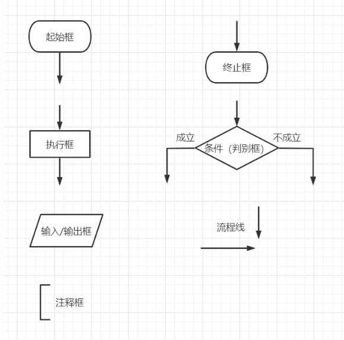
选择结构(if else , switch)
为鼓励居民节约用水，自来水公司采取按用水量阶梯式计价的办法，居民应交水费y（元）
与月用水量x（吨）的关系如下，请编写程序实现水费的计算。
流程图如下所示:
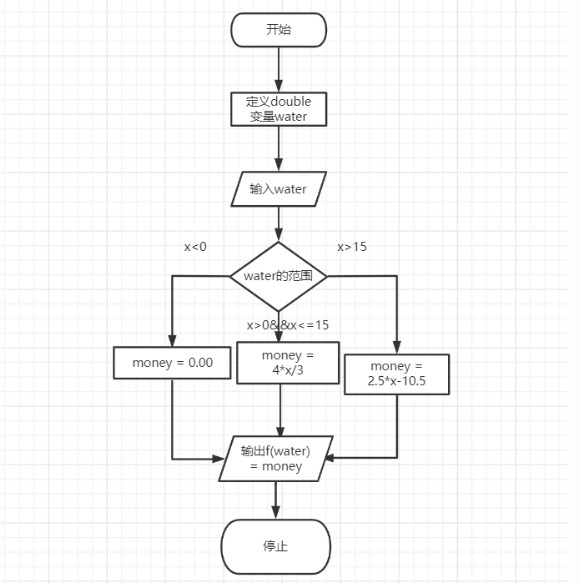
循环结构
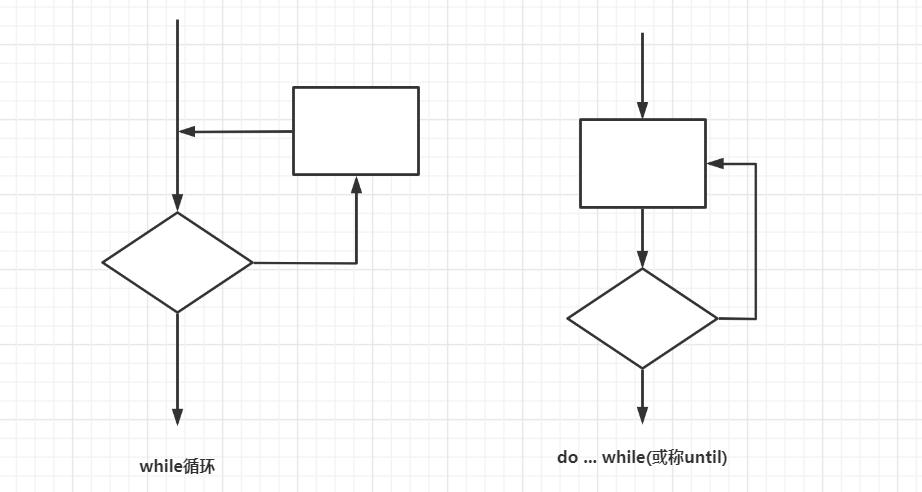
for循环:
题目：本题要求编写程序，计算表达式 1 + 2 + 3 + … + 100 的值。
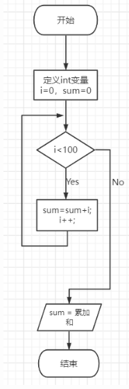
N-S图(盒图) [期末考]
顺序结构:
所有语句顺序执行，先执行A后执行B
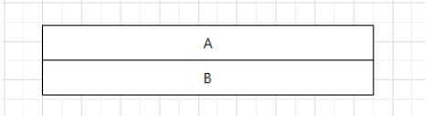
条件结构:
如果条件P成立，执行A，否则执行B
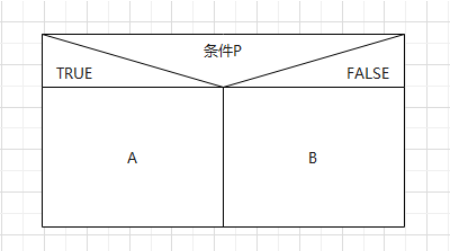
多分支结构:
P=1的时候，执行A1，P=2的时候，执行A2，依次类推；
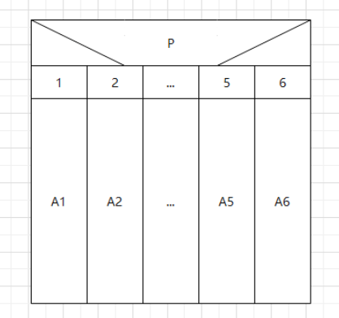
循环结构:
当型(while)
先判断后执行，当P1**==先判断在执行==,条件成立的情况下，反复执行A语句**，直到P1条件不成立为止
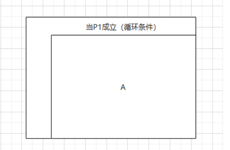
直到型(do.. while或until)
先执行后判断，当P1条件不成立的情况下，反复执行A语句，**==先执行(A语句),再判断==,直到P1条件成立为止(条件满足不再循环)**(注意这与代码不一样,直到满足条件就不循环了,代码do...while满足会循环的)
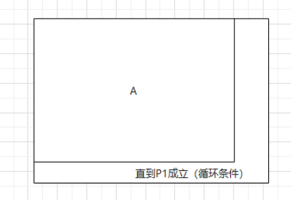
案例:
(1)求1到5所有整数相乘的乘积
注: 图画错了,应该是 t = t * i
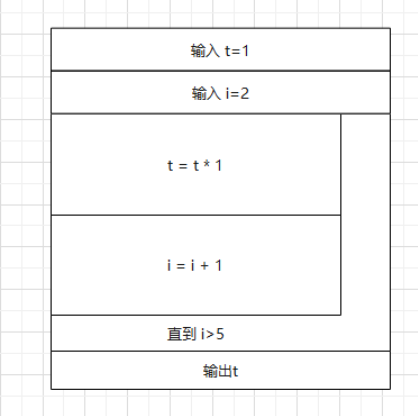
(2) 输入三角形三边长，判断三遍构成的是等边，等腰，还是一般三角形
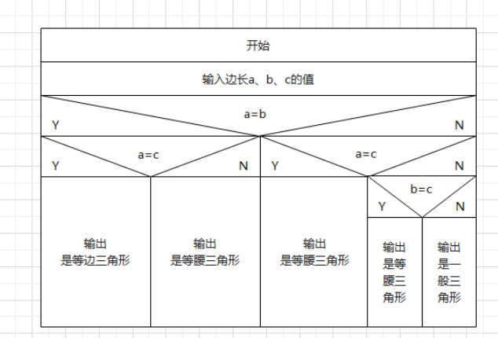
PAD图 [期末考]
PAD图（Problem Analysis Diagram），由日本日立公司1973年发明以后，已得到一定程度的推广。它用二维树形结构的图来表示程序的控制流，将这种图翻译成程序代码比较容易。它既克服了传统的流程图不能清晰表现程序结构的缺点，又不像N-S图那样受到把全部程序约束在一个方框内的限制，这就是其优势所在。
几种结构表示
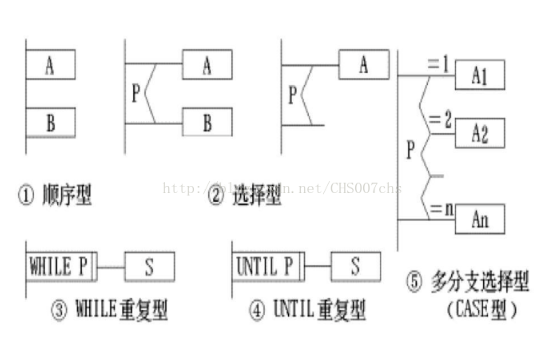
案例:
请根据下列伪码画出对应的PAD图。
1 | 定义变量:i=7,S=0 |
PAD图如图所示:
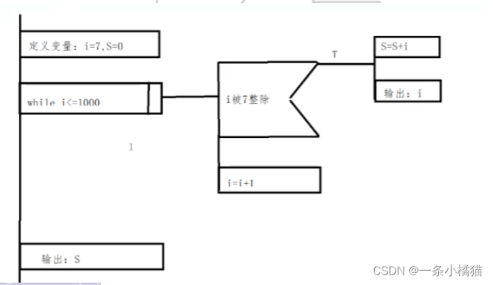
N-S图转换为PAD图
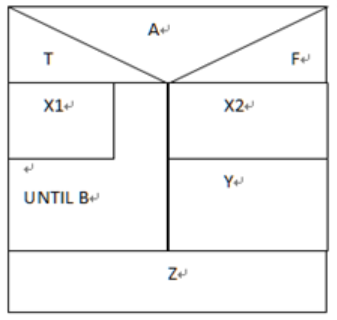
转换后的PAD图
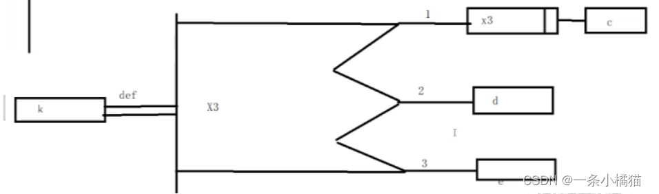